Pooka in a lesson Amanda has a friend, Jamie, who also rides
Pooka out at the kennels.
When Amanda takes a lesson, they both
usually get some ride time. This seems
to work very well for Pooka to get more
saddle time with a child.
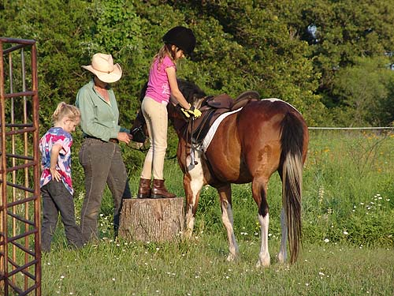
Getting ready to mount up. When Amanda
goes to catch Pooka in the pasture, if he sees her he frequently trots
over to her. He seems to really enjoy her company.
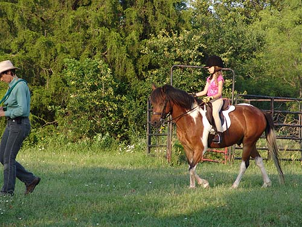
Following Chrissie out to the open
area for her lesson.
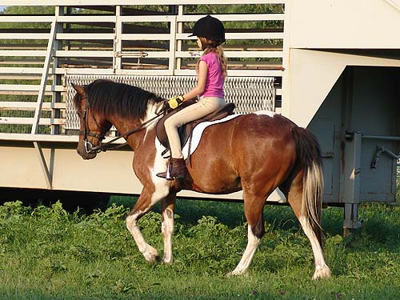
Sometimes Pooka gets quick, but with
the hot days, not so much.
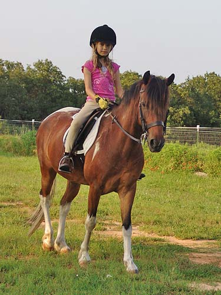
Amanda doesn't like being distracted
during her lesson.
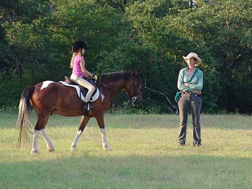
Chrissie watches Amanda's position
and is making her a better rider than me.
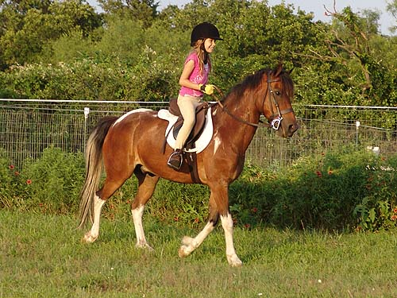
A little bit of trotting.
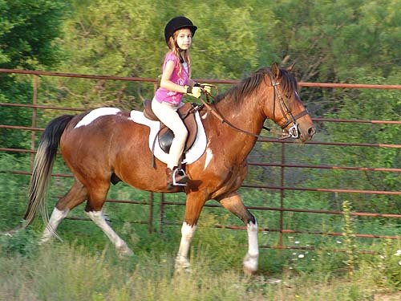
Pooka threw in a buck trotting outside,
so they moved to the round pen. Amanda stayed in the middle of the saddle
for the buck, and continued her trotting outside. Chrissie wanted to be
safe, so the went over to the round pen.
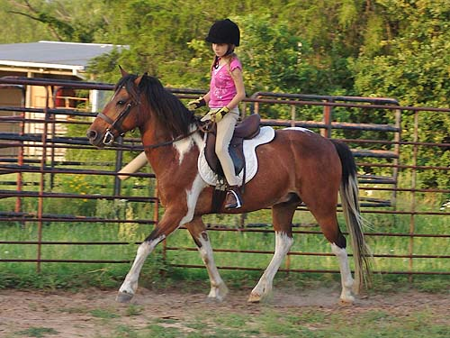
The next ride we had Amanda lunge
Pooka before she rode. He had a little energy on the lunge, but a few canter
circles both ways and was a much calmer pony when she mounted.
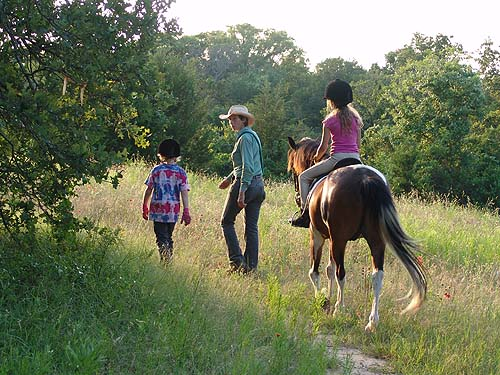
Jamie, Chrissie, Amanda and Pooka
walking around the trails at the kennels.
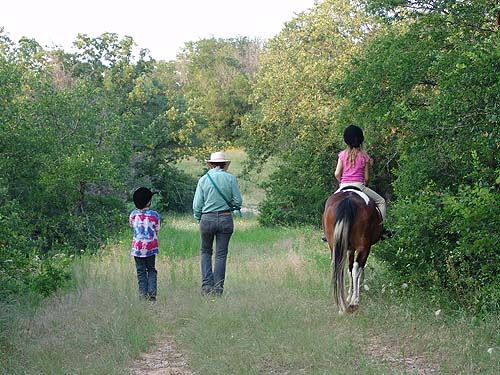
I think the girls enjoy this part
more than the formal lesson part.
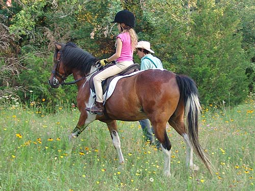
Heading into the trees.
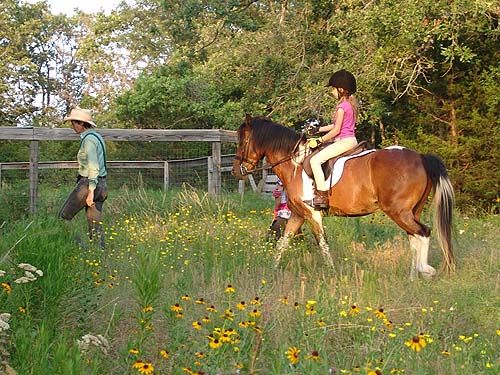
Walking and talking, but Amanda still
focuses on the riding.
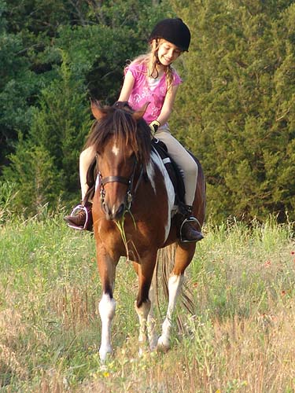
Pooka grabbed a bite to snack on.
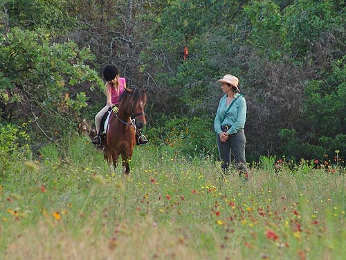
Praising Pooka for carrying her around.
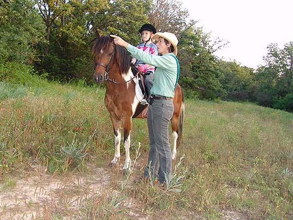
Getting Jamie settled in the saddle
and giving her directions.
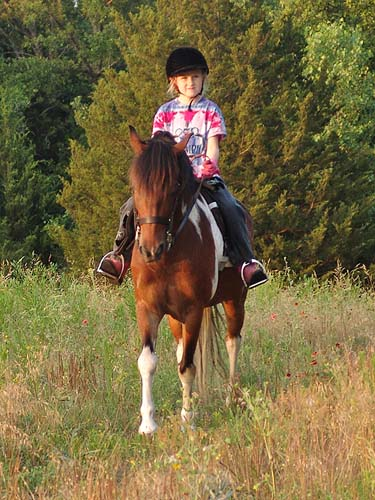
Jamie hasn't ridden as long, but she's
a bold rider.